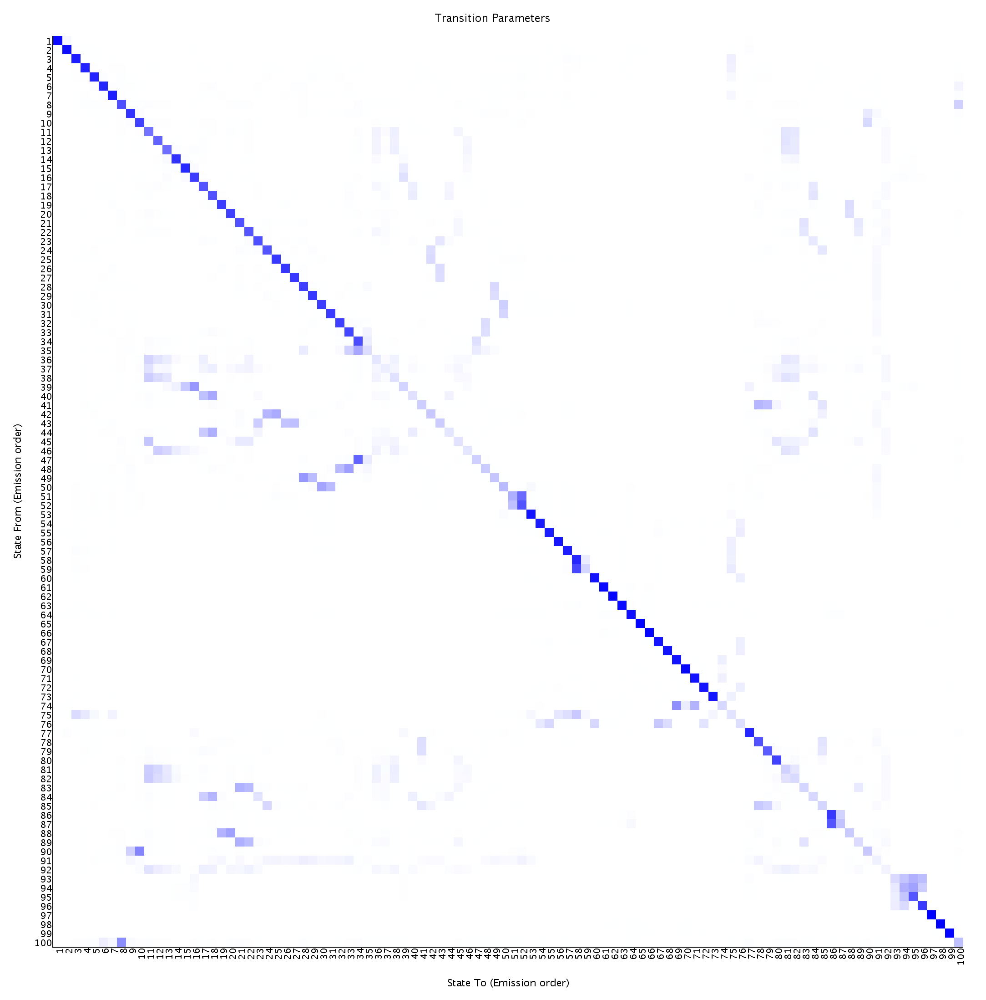

<center><h1>ChromHMM Report</h1></center>
Input Directory: /u/project/ernst/asperlea/ConsHMM_annotations/binarizedFiles/hg38_multiz100way<br>
Output Directory: /u/project/ernst/asperlea/ConsHMM_annotations/models/hg38_multiz100way/100_states/<br>
Number of States: 100<br>
Assembly: hg19<br>
Full ChromHMM command: LearnModel -b 1 -nobed -n 150 -d -1 -lowmem -p 12 /u/project/ernst/asperlea/ConsHMM_annotations/binarizedFiles/hg38_multiz100way /u/project/ernst/asperlea/ConsHMM_annotations/models/hg38_multiz100way/100_states/ 100 hg19
<h1>Model Parameters</h1>
<br>
<li><a href="emissions_100.svg">Emission Parameter SVG File</a><br>
<li><a href="emissions_100.txt">Emission Parameter Tab-Delimited Text File</a><br>
<br>
<li><a href="transitions_100.svg">Transition Parameter SVG File</a><br>
<li><a href="transitions_100.txt">Transition Parameter Tab-Delimited Text File</a><br><br>
<li><a href="model_100.txt">All Model Parameters Tab-Delimited Text File</a> <br>
<h1>Genome Segmentation Files</h1>
